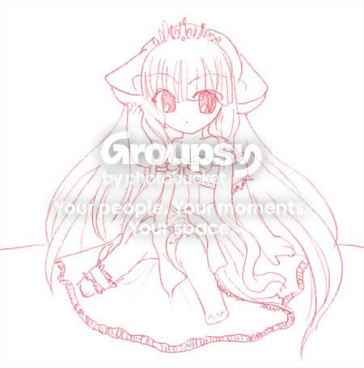

laonoi เขียน:เอาแบบคล้ายๆ avater นุ๊กอ่ะนะ? หรือจะเอาแบบลายเส้น eco? หรือเอาลายเส้นเฟิสเอง โฮะๆ (อันนี้จะไวที่สุดเลย~)
ลายเส้นแบบไหนก้อได้เลย ตามใจคนวาดเรย *0* ม่ะต้องละเอียดมากก้อได้
ภาพดูแบบว่า เหมือนภาพสเกต อะไรประมาณนั้นอ่ะ คลาสสิก *0*/
http://eco.froztic.in.th/archive/ecofanclub/
http://eco.froztic.in.th/archive/ecofanclub/viewtopic.php?f=21&t=1294
laonoi เขียน:เอาแบบคล้ายๆ avater นุ๊กอ่ะนะ? หรือจะเอาแบบลายเส้น eco? หรือเอาลายเส้นเฟิสเอง โฮะๆ (อันนี้จะไวที่สุดเลย~)
coldplay เขียน:ชอบงานคุณFirZoeveเส้นดิบดี
ใช้อะไรทำน่ะ รูปคมชัดจิง

FirZoeve เขียน:รู้สึกว่าจะวาดแบบ โลลิ น่าร๊าก น่ารักกานเยอะเนาะ ( รู้สึกเหมือนเราวาดแล้วไม่น่ารัก... (น่ารักษา) )coldplay เขียน:ชอบงานคุณFirZoeveเส้นดิบดี
ใช้อะไรทำน่ะ รูปคมชัดจิง
TT[]TT~ มีคนชอบ!! (อะเมซิ่ง!!) ขอบคุณ ขอบคุณค่ะ TT^TT อ่า... ใช้ดินสอกดธรรมดาอะจ๊ะ ( แต่ 2Bเท่านั้นเอง *-* )
เวลาวาด... ย้ำอย่างแรง... มันเรยออกมาแบบนั้น...
- - - -
นึกครึ้ม... หันกลับไปลองวาดผู้หญิง... (เพราะเหงคนอื่นเขาวาดกัน)
ทำไมรู้สึกว่ามันวากง่ายกว่าผู้ชายหลายเท่านัก...
